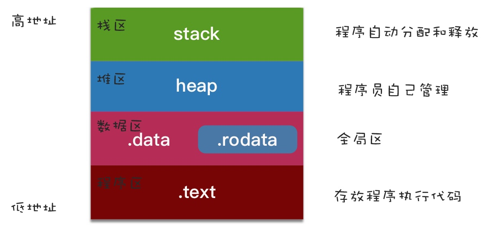
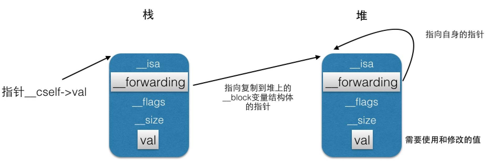
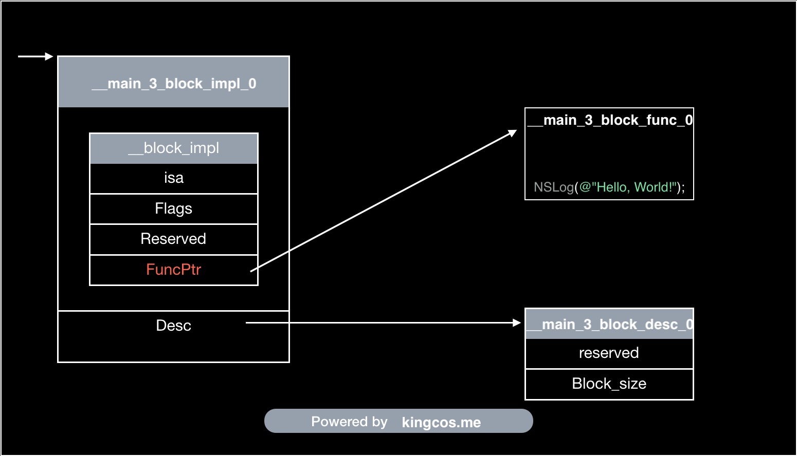
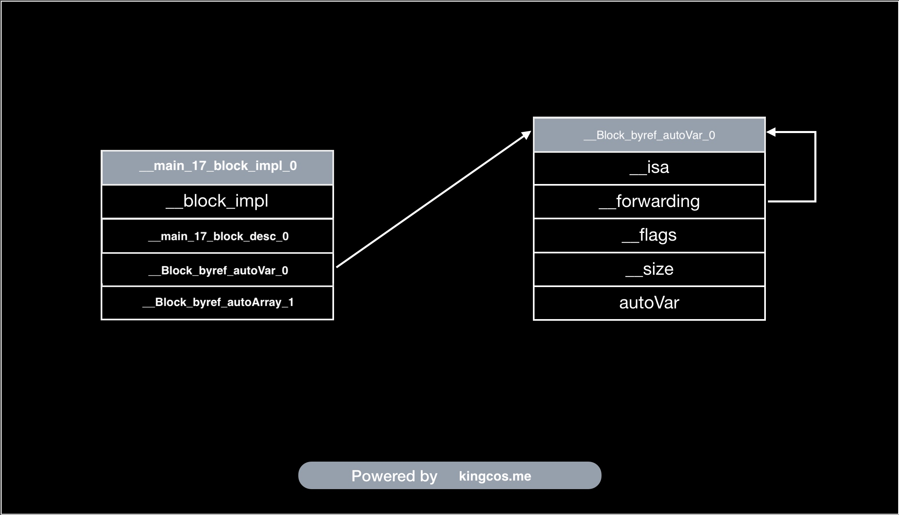
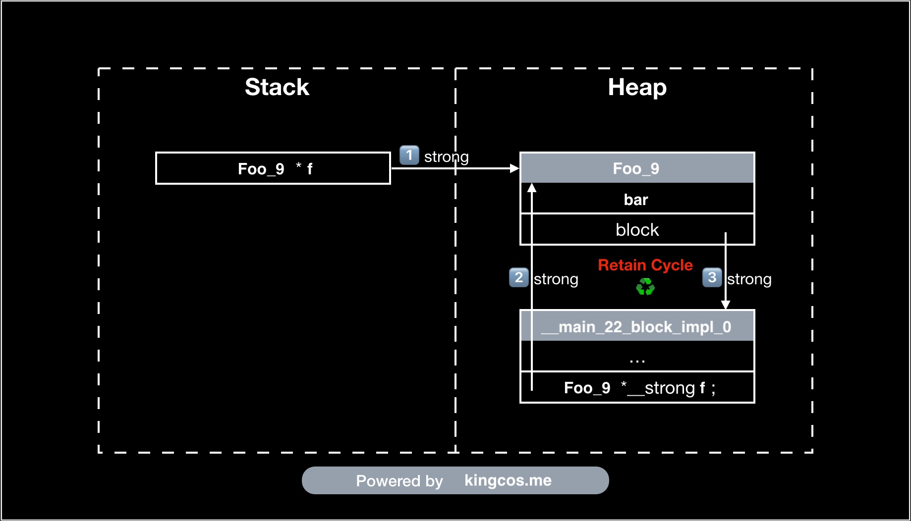

Block
深入研究 Block 捕获外部变量和 __block 实现原理
深入研究 Block 捕获外部变量和 __block 实现原理
里面有提到作用域：

_NSConcreteStackBlock：只用到外部局部变量、成员属性变量，且没有强指针引用的block都是StackBlock。StackBlock的生命周期由系统控制的，一旦返回之后，就被系统销毁了。_NSConcreteMallocBlock：有强指针引用或copy修饰的成员属性引用的block会被复制一份到堆中成为MallocBlock，没有强指针引用即销毁，生命周期由程序员控制_NSConcreteGlobalBlock：没有用到外界变量或只用到全局变量、静态变量的block为_NSConcreteGlobalBlock，生命周期从创建到应用程序结束。
__block 结构体 __forwarding ：

Block 技巧与底层解析
Block 的实际结构：
/* Revised new layout. */
struct Block_descriptor {
unsigned long int reserved;
unsigned long int size;
void (*copy)(void *dst, void *src);
void (*dispose)(void *);
};
struct Block_layout {
void *isa;
int flags;
int reserved;
void (*invoke)(void *, ...);
struct Block_descriptor *descriptor;
/* Imported variables. */
};
_NSConcreteMallocBlock 无法直接创建，只能 _NSConcreteStackBlock 拷贝得到，而 Block 的拷贝最终都会调用 _Block_copy_internal 函数，所以从 _Block_copy_internal 函数中可以得出 _NSConcreteMallocBlock 是如何创建的：
static void *_Block_copy_internal(const void *arg, const int flags) {
struct Block_layout *aBlock;
...
aBlock = (struct Block_layout *)arg;
...
// Its a stack block. Make a copy.
if (!isGC) {
// 申请block的堆内存
struct Block_layout *result = malloc(aBlock->descriptor->size);
if (!result) return (void *)0;
// 拷贝栈中block到刚申请的堆内存中
memmove(result, aBlock, aBlock->descriptor->size); // bitcopy first
// reset refcount
result->flags &= ~(BLOCK_REFCOUNT_MASK); // XXX not needed
result->flags |= BLOCK_NEEDS_FREE | 1;
// 改变isa指向_NSConcreteMallocBlock，即堆block类型
result->isa = _NSConcreteMallocBlock;
if (result->flags & BLOCK_HAS_COPY_DISPOSE) {
//printf("calling block copy helper %p(%p, %p)...\n", aBlock->descriptor->copy, result, aBlock);
(*aBlock->descriptor->copy)(result, aBlock); // do fixup
}
return result;
}
else {
...
}
}
函数通过 memmove 将栈中的 Block 的内容拷贝到了堆中，并使 isa 指向了 _NSConcreteMallocBlock 。
Block 的拷贝代码在 _Block_copy_internal 函数中，根据 Block 的类型不同，拷贝过程中的操作也不同。
栈 Block 的拷贝不仅是拷贝了内容，而且由于从栈拷贝到堆中，还会进行一些额外的操作：
- 往
flags中并入BLOCK_NEEDS_FREE，并将引用计数设置为 1，表示 Block 需要释放，需要自行release； - 如果有辅助 copy 函数 (
BLOCK_HAS_COPY_DISPOSE)，那么就会调用辅助 copy 函数来拷贝 Block 捕获的变量。
...
struct Block_layout *result = malloc(aBlock->descriptor->size);
if (!result) return (void *)0;
memmove(result, aBlock, aBlock->descriptor->size); // bitcopy first
// reset refcount
result->flags &= ~(BLOCK_REFCOUNT_MASK); // XXX not needed
result->flags |= BLOCK_NEEDS_FREE | 1;
result->isa = _NSConcreteMallocBlock;
if (result->flags & BLOCK_HAS_COPY_DISPOSE) {
//printf("calling block copy helper %p(%p, %p)...\n", aBlock->descriptor->copy, result, aBlock);
(*aBlock->descriptor->copy)(result, aBlock); // do fixup
}
return result;
...
堆 Block 由于已经拷贝至堆中，所以其拷贝操作比较简单，首先需要判断是否有 BLOCK_FREE ，如果是，则表示是堆 Block ，那么只需要执行 latching_incr_int 操作，将 Block 的引用计数加 1 即可，只需要单纯地改变引用计数：
...
if (aBlock->flags & BLOCK_NEEDS_FREE) {
// latches on high
latching_incr_int(&aBlock->flags);
return aBlock;
}
...
全局 Block 不需要执行任何操作，只是直接返回了传入的 Block ：
...
else if (aBlock->flags & BLOCK_IS_GLOBAL) {
return aBlock;
}
...
// flags/_flags类型
enum {
/* See function implementation for a more complete description of these fields and combinations */
// 是一个对象
BLOCK_FIELD_IS_OBJECT = 3, /* id, NSObject, __attribute__((NSObject)), block, ... */
// 是一个block
BLOCK_FIELD_IS_BLOCK = 7, /* a block variable */
// 被__block修饰的变量
BLOCK_FIELD_IS_BYREF = 8, /* the on stack structure holding the __block variable */
// 被__weak修饰的变量，只能被辅助copy函数使用
BLOCK_FIELD_IS_WEAK = 16, /* declared __weak, only used in byref copy helpers */
// block辅助函数调用（告诉内部实现不要进行retain或者copy）
BLOCK_BYREF_CALLER = 128 /* called from __block (byref) copy/dispose support routines. */
};
// 设置不同属性对应的flags/_flags值
__block id 128+3
__weak block id 128+3+16
__block (^Block) 128+7
__weak __block (^Block) 128+7+16
struct Block_byref {
void *isa;
struct Block_byref *forwarding;
int flags; /* refcount; */
int size;
void (*byref_keep)(struct Block_byref *dst, struct Block_byref *src);
void (*byref_destroy)(struct Block_byref *);
/* long shared[0]; */
};
// 做下对比
struct __Block_byref_a_0 {
void *__isa;
__Block_byref_a_0 *__forwarding;
int __flags;
int __size;
int a;
};
__block 将原来的基本类型包装成了对象。因为以上两个结构体的前 4 个成员的类型都是一样的，内存空间排列一致，所以可以进行以下操作：
// 转换成C++代码
static void __main_block_copy_0(struct __main_block_impl_0*dst, struct __main_block_impl_0*src) {_Block_object_assign((void*)&dst->a, (void*)src->a, 8/*BLOCK_FIELD_IS_BYREF*/);}
// _Block_object_assign源码
void _Block_object_assign(void *destAddr, const void *object, const int flags) {
...
else if ((flags & BLOCK_FIELD_IS_BYREF) == BLOCK_FIELD_IS_BYREF) {
// copying a __block reference from the stack Block to the heap
// flags will indicate if it holds a __weak reference and needs a special isa
_Block_byref_assign_copy(destAddr, object, flags);
}
...
}
// _Block_byref_assign_copy源码
static void _Block_byref_assign_copy(void *dest, const void *arg, const int flags) {
// 这里因为前面4个成员的内存分布一样，所以直接转换后，使用Block_byref的成员变量名，能访问到__Block_byref_a_0的前面4个成员
struct Block_byref **destp = (struct Block_byref **)dest;
struct Block_byref *src = (struct Block_byref *)arg;
...
else if ((src->forwarding->flags & BLOCK_REFCOUNT_MASK) == 0) {
// 从main函数对__Block_byref_a_0的初始化，可以看到初始化时将flags赋值为0
// 这里表示第一次拷贝，会进行复制操作，并修改原来flags的值
// static int _Byref_flag_initial_value = BLOCK_NEEDS_FREE | 2;
// 可以看出，复制后，会并入BLOCK_NEEDS_FREE，后面的2是包装对象的初始引用计数（栈上持有+堆上持有）
...
copy->flags = src->flags | _Byref_flag_initial_value;
...
}
// 已经拷贝到堆了，只增加引用计数
else if ((src->forwarding->flags & BLOCK_NEEDS_FREE) == BLOCK_NEEDS_FREE) {
latching_incr_int(&src->forwarding->flags);
}
// 普通的赋值，里面最底层就*destptr = value;这句表达式
_Block_assign(src->forwarding, (void **)destp);
}
对象的辅助函数：
没有 __block 修饰：
typedef void(^Block)();
int main(int argc, const char * argv[]) {
@autoreleasepool {
NSObject *a = [[NSObject alloc] init];
Block block = ^ {
a;
};
}
return 0;
}
首先，在没有 __block 修饰时，对象编译转换的结果如下：
static void __main_block_func_0(struct __main_block_impl_0 *__cself) {
NSObject *a = __cself->a; // bound by copy
a;
}
static void __main_block_copy_0(struct __main_block_impl_0*dst, struct __main_block_impl_0*src) {_Block_object_assign((void*)&dst->a, (void*)src->a, 3/*BLOCK_FIELD_IS_OBJECT*/);}
static void __main_block_dispose_0(struct __main_block_impl_0*src) {_Block_object_dispose((void*)src->a, 3/*BLOCK_FIELD_IS_OBJECT*/);}
static struct __main_block_desc_0 {
size_t reserved;
size_t Block_size;
void (*copy)(struct __main_block_impl_0*, struct __main_block_impl_0*);
void (*dispose)(struct __main_block_impl_0*);
} __main_block_desc_0_DATA = { 0, sizeof(struct __main_block_impl_0),
对象在没有 __block 修饰时，并没有产生 __Block_byref_a_0 结构体，只是将标志位修改为 BLOCK_FIELD_IS_OBJECT 。而在 _Block_object_assign 中对应的判断分支代码如下：
v...
else if ((flags & BLOCK_FIELD_IS_OBJECT) == BLOCK_FIELD_IS_OBJECT) {
_Block_retain_object(object);
_Block_assign((void *)object, destAddr);
}
...
Block 在捕获对象时会进行 retain 操作，增加引用计数。
在有 __block 修饰时：
typedef void(^Block)();
int main(int argc, const char * argv[]) {
@autoreleasepool {
__block NSObject *a = [[NSObject alloc] init];
Block block = ^ {
a;
};
}
return 0;
}
// 转换后：
struct __Block_byref_a_0 {
void *__isa;
__Block_byref_a_0 *__forwarding;
int __flags;
int __size;
void (*__Block_byref_id_object_copy)(void*, void*);
void (*__Block_byref_id_object_dispose)(void*);
NSObject *a;
};
int main(int argc, const char * argv[]) {
/* @autoreleasepool */ { __AtAutoreleasePool __autoreleasepool;
attribute__((__blocks__(byref))) __Block_byref_a_0 a = {(void*)0,(__Block_byref_a_0 *)&a, 33554432, sizeof(__Block_byref_a_0), __Block_byref_id_object_copy_131, __Block_byref_id_object_dispose_131,....};
Block block = (void (*)())&__main_block_impl_0((void *)__main_block_func_0, &__main_block_desc_0_DATA, (__Block_byref_a_0 *)&a, 570425344);
}
// 以下的40表示__Block_byref_a_0对象a的位移（4个指针(32字节)＋2个int变量(8字节)＝40字节）
static void __Block_byref_id_object_copy_131(void *dst, void *src) {
_Block_object_assign((char*)dst + 40, *(void * *) ((char*)src + 40), 131);
}
static void __Block_byref_id_object_dispose_131(void *src) {
_Block_object_dispose(*(void * *) ((char*)src + 40), 131);
}
__Block_byref_a_0 新增两个内存管理的辅助函数 __Block_byref_id_object_copy 和 __Block_byref_id_object_dispose 。最后的 131 参数表示 BLOCK_BYREF_CALLER|BLOCK_FIELD_IS_OBJECT ， BLOCK_BYREF_CALLER 用于表明不需要对 __block 修饰的 a 对象进行 retain 或者 copy ：
if ((flags & BLOCK_BYREF_CALLER) == BLOCK_BYREF_CALLER) {
...
else {
// do *not* retain or *copy* __block variables whatever they are
_Block_assign((void *)object, destAddr);
}
}
_Block_byref_assign_copy 函数的以下代码会对上面的辅助函数 __Block_byref_id_object_copy_131 进行调用， 570425344 表示 BLOCK_HAS_COPY_DISPOSE|BLOCK_HAS_DESCRIPTOR ，所以会执行以下相关源码：
if (src->flags & BLOCK_HAS_COPY_DISPOSE) {
// Trust copy helper to copy everything of interest
// If more than one field shows up in a byref block this is wrong XXX
copy->byref_keep = src->byref_keep;
copy->byref_destroy = src->byref_destroy;
(*src->byref_keep)(copy, src);
}
一道 Block 面试题的深入挖掘
借由 NSNotificationCenter 和 token 说明实际编码中 Block 需要注意的地方以及原理。
Block 语法快速查询
由于 Objective-C 的 Block 语法实在是太难记了，反观 Swift 😂 ，所以有了这么一个快速查看 Block 语法的网站：
How Do I Declare A Block in Objective-C?
Obj-C 中的 Block
Objective-C 中的 Block 相当于匿名函数。
通过 xcrun -sdk iphoneos clang -arch arm64 -rewrite-objc main.m -o main.cpp 转换为 C++ 代码可以查看 Block 的结构体。
__main_3_block_impl_0 为具体 Block 对应的 struct ，包含 __block_impl 和 __main_3_block_desc_0 。
// Block 实现的结构体
struct __block_impl {
void *isa; // isa 指针，即 Block 也是 id 类型，即 Obj-C 对象
int Flags; // 标记，默认会被初始化为 0
int Reserved; // 保留域（ABI 兼容），默认 0
void *FuncPtr; // Block 代码块的函数指针
};
// ➡️ Block 结构体
struct __main_3_block_impl_0 {
struct __block_impl impl; // 实现（非指针）
struct __main_3_block_desc_0* Desc; // 描述信息（指针）
// 构造函数
__main_3_block_impl_0(void *fp, struct __main_3_block_desc_0 *desc, int flags=0) {
impl.isa = &_NSConcreteStackBlock; // Block 作为 Obj-C 对象，那么 isa 将指向其类对象，即 _NSConcreteStackBlock
impl.Flags = flags;
impl.FuncPtr = fp;
Desc = desc;
}
};
// Block 内代码块封装在该 C 语言静态函数中，函数命名规则：__CALLER_METHOD_NAME_block_func_NUMBER
// 类似 Obj-C 实例方法参数 self 或 C++ 实例方法参数 this，__cself 为指向 Block 结构体的变量
static void __main_3_block_func_0(struct __main_3_block_impl_0 *__cself) {
NSLog((NSString *)&__NSConstantStringImpl__var_folders_ps_0m9gnvtj0893vpf1cr595djh0000gn_T_main_b9596e_mi_0);
}
// Block 描述信息的结构体静态变量
static struct __main_3_block_desc_0 {
size_t reserved; // 保留域，默认 0
size_t Block_size; // Block 大小，sizeof 整个 Block 结构体 ⬇️
} __main_3_block_desc_0_DATA = { 0, sizeof(struct __main_3_block_impl_0)};
// 主函数
int main_3(int argc, const char * argv[]) {
// 通过 __main_3_block_impl_0 结构体的构造函数初始化，参数为静态函数和描述信息静态变量的地址，将地址存储在 block 变量中
// 忽略类型转换：block = &__main_3_block_impl_0(__main_3_block_func_0, &__main_3_block_desc_0_DATA));
void(*block)(void) = ((void (*)())&__main_3_block_impl_0((void *)__main_3_block_func_0, &__main_3_block_desc_0_DATA));
// 执行 Block（参数 block 即静态函数中的参数 __cself）
// 忽略类型转换：block->FuncPtr(block);
// 在 __main_block_impl_0 结构体中，impl 是第一个变量，因此其与结构体本身的首地址一致，因此可以强转
((void (*)(__block_impl *))((__block_impl *)block)->FuncPtr)((__block_impl *)block);
return 0;
}

Block 对于捕获变量的不同也会有不同的处理
- 局部变量，进行值拷贝传递，修改原有的值不影响 Block 所捕获的值；
- 显式或者隐式捕获
self，Block 会持有self的引用，有可能触发我们常说的循环引用； - 静态局部变量， 虽然作用域在代码块内，但是其生命周期是全局的，所以 Block 直接持有对变量的引用；
- 全局变量，Block 不会捕获，使用时直接进行读取。
Block 的类型：
__NSGlobalBlock__ ，不捕获自动变量，即运行时不依赖上下文，放在内存的数据段 (Data Section) ，和全局变量同一个 Section 。对 __NSGlobalBlock__ 执行拷贝后得到的仍是 __NSGlobalBlock__ 。
__NSStackBlock__ ，当 Block 捕获了外界自动变量时，则会被分配在栈区，变成 __NSStackBlock__ ，开发者无需关心其生命周期。
__NSMallocBlock__ ，Block 分配在堆区，需要开发者手动管理其生命周期，ARC 下编译器会根据情况将 __NSStackBlock__ 类型的 Block 自动 copy 到堆上，将 Block 的 isa 设置为 _NSConcreteMallocBlock ，以下操作会将 Block copy 到堆上：
- 强指针或者属性指向的 Block ；
- Block 作为函数值会自动拷贝；
- Block 作为 Cocoa API 中方法名含有
usingBlock的参数时会自动拷贝； - Block 作为 GCD API 参数时会被自动拷贝；
__block 声明的变量：
Block 内可以直接修改
__block 声明会将变量封装为对应的结构体，而不同的变量就会生成不同的结构体。 __block 变量从声明后，无论在 Block 内外去访问均是通过结构体的 __forwarding 指针即 blockVar.__forwarding->blockVar 。当 __block 变量在栈上时， blockVar.__forwarding->blockVar 就等同于直接通过 blockVar->blockVar 来访问的，因为此时 __forwarding 就指向栈上的结构体本身；而当 Block 拷贝到堆上时， __block 变量也会被拷贝到堆上，此时栈上的 __forwarding 将替换为指向堆上的结构体，而堆上的结构体里的 __forwarding 将指向堆上的结构体本身，从而保证后续的数据变动均是在堆上。
上面说到 Block 会生成不同的结构体，也就说使用 Block 实现的功能代码量会较多。

循环引用：
typedef void(^BlockType_5)(void);
@interface Foo_9 : NSObject
@property (nonatomic, assign) NSUInteger bar;
@property (nonatomic, copy) BlockType_5 block;
@end
@implementation Foo_9
- (void)dealloc
{
#if !__has_feature(objc_arc)
[super dealloc];
#endifNSLog(@"dealloc");
}
- (void)foo_1 {
// Block 捕获了 self，其强引用了 Block，导致双方都无法释放
self.block = ^{
// WARNING: Capturing 'self' strongly in this block is likely to lead to a retain cycle
NSLog(@"%lu", (unsigned long)self.bar);
// WARNING: Block implicitly retains 'self'; explicitly mention 'self' to indicate this is intended behavior
NSLog(@"%lu", (unsigned long)_bar); // self->_bar
};
}
@end
int main_22(int argc, const char * argv[]) {
#if __has_feature(objc_arc)
Foo_9 *f = [[Foo_9 alloc] init];
f.bar = 20;
f.block = ^{
// Block 捕获了 f，其强引用了 Block，导致双方都无法释放
// WARNING: Capturing 'f' strongly in this block is likely to lead to a retain cycle
NSLog(@"%lu", (unsigned long)f.bar);
};
f.block();
[f foo_1];
// Never call dealloc
#endifreturn 0;
}
// OUTPUT:
// 20

用 Block 实现 delegate 方法
使用 NSInvocation ，消息转化机制和 Block 结构体获取 NSMethodSignature 。
NSInvocation 需要注意的地方：
方法的自定义参数从 index 2 开始，前两个参数是接收消息的对象和方法的 SEL ；
-getArgument:atIndex: 和 -getReturnvalue: 方法中获取的对象不会进行 retain ，所以不能直接使用具体的对象指针，只能使用 vod * ：
// 错误代码
NSString *bar = nil;
[invocation getArgument:&bar atIndex:2];
NSString *result = nil;
[invocation getReturnValue:&result];
// 正确代码
void *bar = nil;
//__unsafe_unretained NSString *bar = nil;
//__weak NSString *bar = nil;
[invocation getArgument:&bar atIndex:2];
void *result = nil;
//__unsafe_unretained NSString *result = nil;
//__weak NSString *result = nil;
[invocation getReturnValue:&result];
如果是在两个 NSInvocation 对象间传递参数/返回值，可以直接传入指针获取和设置目标地址：
....
NSInvocation *invocation = [NSInvocation invocationWithMethodSignature:signature];
NSInvocation *shadowInvocation = [NSInvocation invocationWithMethodSignature:signature];
....
void *resultBuffer = malloc(invocation.methodSignature.methodReturnLength);
memset(resultBuffer, 0, invocation.methodSignature.methodReturnLength);
[invocation getReturnValue:resultBuffer];
[shadowInvocation setReturnValue:resultBuffer];
....
free(resultBuffer);
从协议中获取方法签名，利用 protocol_getMethodDescription 函数，可以获取到描述类型的 C 字符串，再通过这个字符串构造方法签名。针对协议中的接口有 required 和 optional 两种，并且不允许重复这一特点，可以创建构造方法签名的函数：
static NSMethodSignature *tbv_getProtocolMethodSignature(Protocol *protocol, SEL selector, BOOL isInstanceMethod) {
struct objc_method_description methodDescription = protocol_getMethodDescription(protocol, selector, YES, isInstanceMethod);
if (!methodDescription.name) {
methodDescription = protocol_getMethodDescription(protocol, selector, NO, isInstanceMethod);
}
return [NSMethodSignature signatureWithObjCTypes:methodDescription.types];
}
第三个参数表示是否为 required ，如果从 required 中获取不到对应的 objc_method_description ，再从 optional 中获取：
从 Block 中获取方法签名，虽然苹果没有提供公开的 API 给开发者获取，但是可以通过自定义一个与 Block 结构相同的 struct ，通过这个 struct 来获取方法签名：
// Block internals.
typedef NS_OPTIONS(int, TBVBlockFlags) {
TBVBlockFlagsHasCopyDisposeHelpers = (1 << 25),
TBVBlockFlagsHasSignature = (1 << 30)
};
typedef struct tbv_block {
__unused Class isa;
TBVBlockFlags flags;
__unused int reserved;
void (__unused *invoke)(struct tbv_block *block, ...);
struct {
unsigned long int reserved;
unsigned long int size;
// requires TBVBlockFlagsHasCopyDisposeHelpers
void (*copy)(void *dst, const void *src);
void (*dispose)(const void *);
// requires TBVBlockFlagsHasSignature
const char *signature;
const char *layout;
} *descriptor;
// imported variables
} *TBVBlockRef;
// 使用自定义的 TBVBlockRef 获取 descriptor
static NSMethodSignature *tbv_signatureForBlock(id block) {
TBVBlockRef layout = (__bridge TBVBlockRef)(block);
// 没有签名，直接返回空
if (!(layout->flags & TBVBlockFlagsHasSignature)) {
return nil;
}
// 获取 descriptor 指针
void *desc = layout->descriptor;
// 跳过 reserved 和 size 成员
desc += 2 * sizeof(unsigned long int);
// 如果有 Helpers 函数， 跳过 copy 和 dispose 成员
if (layout->flags & TBVBlockFlagsHasCopyDisposeHelpers) {
desc += 2 * sizeof(void *);
}
// desc 为 signature 指针的地址，转换下给 objcTypes
char *objcTypes = (*(char **)desc);
return [NSMethodSignature signatureWithObjCTypes:objcTypes];
}
为了确保 Block 和方法两者的参数是相同的，需要对两者的签名进行匹配，即检验返回值类型和参数类型是否相同：
static BOOL tbv_isCompatibleBlockSignature(NSMethodSignature *blockSignature, NSMethodSignature *methodSignature) {
NSCParameterAssert(blockSignature);
NSCParameterAssert(methodSignature);
if ([blockSignature isEqual:methodSignature]) {
return YES;
}
// block 参数个数需要小于 method 的参数个数 (针对 block 调用替换 method 调用)
// 两者返回类型需要一致
if (blockSignature.numberOfArguments >= methodSignature.numberOfArguments ||
blockSignature.methodReturnType[0] != methodSignature.methodReturnType[0]) {
return NO;
}
// 参数类型需要一致
BOOL compatibleSignature = YES;
// 自定义参数从第二个开始
for (int idx = 2; idx < blockSignature.numberOfArguments; idx++) {
// block 相比 method ，默认参数少了 SEL
// method: id(@) SEL(:) ....
// block: block(@?) ....
const char *methodArgument = [methodSignature getArgumentTypeAtIndex:idx];
const char *blockArgument = [blockSignature getArgumentTypeAtIndex:idx - 1];
if (!methodArgument || !blockArgument || methodArgument[0] != blockArgument[0]) {
compatibleSignature = NO;
break;
}
}
return compatibleSignature;
}
调用 Block 的 NSInvocation ，由于直接调用的是 delegate 方法，在转发时接收到的是方法对应的 NSInvocation ，所以需要将其的参数和返回值传递给 Block 的 NSInvocation ：
- (void)invokeWithMethodInvocation:(NSInvocation *)methodInvocation {
NSParameterAssert(methodInvocation);
NSAssert([self.methodSignature isEqual:methodInvocation.methodSignature], @"Method invocation's signature is not compatible with block signature");
NSMethodSignature *methodSignature = methodInvocation.methodSignature;
NSInvocation *blockInvocation = [NSInvocation invocationWithMethodSignature:self.blockSignature];
void *argumentBuffer = NULL;
for (int idx = 2; idx < methodSignature.numberOfArguments; idx++) {
// 获取参数类型
const char *type = [methodSignature getArgumentTypeAtIndex:idx];
NSUInteger size = 0;
// 获取参数大小
NSGetSizeAndAlignment(type, &size, NULL);
// 参数缓存
if (!(argumentBuffer = reallocf(argumentBuffer, size))) {
return;
}
// 把 method 的参数传递给 block
[methodInvocation getArgument:argumentBuffer atIndex:idx];
[blockInvocation setArgument:argumentBuffer atIndex:idx - 1];
}
// 调用 block
[blockInvocation invokeWithTarget:self.block];
// 返回值缓存
if (methodSignature.methodReturnLength &&
(argumentBuffer = reallocf(argumentBuffer, methodSignature.methodReturnLength))) {
// 把 block 的返回值传递给 method
[blockInvocation getReturnValue:argumentBuffer];
[methodInvocation setReturnValue:argumentBuffer];
}
// 释放缓存
free(argumentBuffer);
}
// reallocf 函数是 realloc 函数的增强版，它可以在后者无法申请到堆空间时，释放旧的堆空间：
void *reallocf(void *p, size_t s) {
void *tmp = realloc(p, s);
if(tmp) return tmp;
free(p);
return NULL;
}
最后是通过消息转发的 forwardInvocaion: 方法进行转发：
- (void)forwardInvocation:(NSInvocation *)invocation {
TBVBlockInvocation *blockInvocation = self.selectorInvocationMap[NSStringFromSelector(invocation.selector)];
[blockInvocation invokeWithMethodInvocation:invocation];
}
- (NSMethodSignature *)methodSignatureForSelector:(SEL)sel {
return self.selectorInvocationMap[NSStringFromSelector(sel)].methodSignature;
}
- (BOOL)respondsToSelector:(SEL)aSelector {
return !!self.selectorInvocationMap[NSStringFromSelector(aSelector)];
}
如何获取 Block 捕获的对象
由于 Objective-C 使用引用计数作为内存管理方法，且 Block 会强引用所捕获的对象，所以 Block 经常会造成引用循环。本文讲述了如何通过 Block 的布局，捕获变量排序来获取 Block 强引用的对象。
Block 捕获的对象会统一放在 layout 的 descriptor 后面，即 sr_block_layout 结构体的 imported variables 部分，这种操作可以看作在 sr_block_layout 尾部定义了一个 0 长数组，可以根据实际捕获变量的大小，给捕获区域申请对应的内存空间，只不过这一操作由编译器完成 :
struct sr_block_layout {
void *isa;
int flags;
int reserved;
void (*invoke)(void *, ...);
struct sr_block_descriptor *descriptor;
char captured[0];
};
// 标志位不一样，这个结构的实际布局也会有差别，这里简单地放在一起好阅读
struct sr_block_descriptor {
unsigned long reserved; // Block_descriptor_1
unsigned long size; // Block_descriptor_1
void (*)(void *dst, void *src); // Block_descriptor_2 BLOCK_HAS_COPY_DISPOSE
void (*dispose)(void *); // Block_descriptor_2
const char *signature; // Block_descriptor_3 BLOCK_HAS_SIGNATURE
const char *layout; // Block_descriptor_3 contents depend on BLOCK_HAS_EXTENDED_LAYOUT
};
Block 的捕获区域布局有特定的排序规则：
在对齐字节数 ( alignment ) 不相等时，捕获的实体按照 alignment 降序排序 ( C 结构体比较特殊，即使整体占用空间比指针变量大，也排在对象指针后面)，否则按照以下类型排序：
__strong修饰对象指针变量__block修饰对象指针变量__weak修饰对象指针变量- 其他变量
一个例子：
NSObject *o1 = [NSObject new];
__weak NSObject *o2 = o1;
__block NSObject *o3 = o1;
unsigned long long j = 4;
int i = 3;
char c = 'a';
void (^blk)(void) = ^{
i;
c;
o1;
o2;
o3;
j;
};
输出：
(lldb) x/69bx layout
0x10200d940: 0x70 0x21 0x7b 0xa6 0xff 0x7f 0x00 0x00
0x10200d948: 0x02 0x00 0x00 0xc3 0x00 0x00 0x00 0x00
0x10200d950: 0xf0 0x1b 0x00 0x00 0x01 0x00 0x00 0x00
0x10200d958: 0xf8 0x20 0x00 0x00 0x01 0x00 0x00 0x00
0x10200d960: 0xa0 0xf6 0x00 0x02 0x01 0x00 0x00 0x00 // o1
0x10200d968: 0x90 0xd9 0x00 0x02 0x01 0x00 0x00 0x00 // o3
0x10200d970: 0xa0 0xf6 0x00 0x02 0x01 0x00 0x00 0x00 // o2
0x10200d978: 0x04 0x00 0x00 0x00 0x00 0x00 0x00 0x00 // j
0x10200d980: 0x03 0x00 0x00 0x00 0x61 // i c
(lldb) p o1
(NSObject *) $1 = 0x000000010200f6a0
可以看到，小端模式下，捕获的 o1 和 o2 指针变量值为 0x10200f6a0 ，对应内存地址为 0x10200d960 和 0x10200d970 ，而 o3 因为被 __block 修饰，编译器为 o3 捕获变量包装了一层 byref 结构，所以其值为 byref 结构的地址 0x102000d990 ，而不是 0x10200f6a0 ，捕获的 j 变量地址为 0x10200d978，i 变量地址为 0x10200d980，c 字符变量紧随其后。
通过分析 descriptor 的 layout 信息则可以获取捕获到的对象个数。
// block
// Extended layout encoding.
// Values for Block_descriptor_3->layout with BLOCK_HAS_EXTENDED_LAYOUT
// and for Block_byref_3->layout with BLOCK_BYREF_LAYOUT_EXTENDED
// If the layout field is less than 0x1000, then it is a compact encoding
// of the form 0xXYZ: X strong pointers, then Y byref pointers,
// then Z weak pointers.
// If the layout field is 0x1000 or greater, it points to a
// string of layout bytes. Each byte is of the form 0xPN.
// Operator P is from the list below. Value N is a parameter for the operator.
enum {
...
BLOCK_LAYOUT_NON_OBJECT_BYTES = 1, // N bytes non-objects
BLOCK_LAYOUT_NON_OBJECT_WORDS = 2, // N words non-objects
BLOCK_LAYOUT_STRONG = 3, // N words strong pointers
BLOCK_LAYOUT_BYREF = 4, // N words byref pointers
BLOCK_LAYOUT_WEAK = 5, // N words weak pointers
...
};
// clang
/// InlineLayoutInstruction - This routine produce an inline instruction for the
/// block variable layout if it can. If not, it returns 0. Rules are as follow:
/// If ((uintptr_t) layout) < (1 << 12), the layout is inline. In the 64bit world,
/// an inline layout of value 0x0000000000000xyz is interpreted as follows:
/// x captured object pointers of BLOCK_LAYOUT_STRONG. Followed by
/// y captured object of BLOCK_LAYOUT_BYREF. Followed by
/// z captured object of BLOCK_LAYOUT_WEAK. If any of the above is missing, zero
/// replaces it. For example, 0x00000x00 means x BLOCK_LAYOUT_STRONG and no
/// BLOCK_LAYOUT_BYREF and no BLOCK_LAYOUT_WEAK objects are captured.`
descriptor->layout 会包含捕获的对象个数，且会根据 __strong ， __block 和 __weak 进行区分。
NSObject *o1 = [NSObject new];
__block NSObject *o3 = o1;
__weak NSObject *o2 = o1;
NSObject *o4 = o1;
... // 5 - 18
NSObject *o19 = o1;
void (^blk)(void) = ^{
o1;
o2;
o3;
o4;
... // 5 - 18
o19;
};
(lldb) p/x (long)layout->descriptor->layout
(long) $0 = 0x0000000100002f44
(lldb) x/8bx layout->descriptor->layout
0x100002f44: 0x3f 0x30 0x40 0x50 0x00 0x76 0x31 0x36
由于结构体的布局顺序在生命时就确定了，无法像 Block 那样在编译时再根据变量类型，修饰符进行调整，所以如果结构体中有类型为对象指针的字段，就需要额外的信息来进行记录，这也会影响 layout 。
使用 __block 修饰的捕获变量首先会转换成 byref 结构，然后再由这个结构去持有实际的变量， Block 只负责管理 byref ：
struct sr_block_byref {
void *isa;
struct sr_block_byref *forwarding;
volatile int32_t flags; // contains ref count
uint32_t size;
// requires BLOCK_BYREF_HAS_COPY_DISPOSE
void (*byref_keep)(struct sr_block_byref *dst, struct sr_block_byref *src);
void (*byref_destroy)(struct sr_block_byref *);
// requires BLOCK_BYREF_LAYOUT_EXTENDED
const char *layout;
};
这里使用 layout 的原因是需要根据不同的捕获变量记录不同的信息，具体的实现可以查看原文。
了解完 Block 的捕获区域的内存布局后，就可以通过内存布局来获取强引用对象了：
- 被 Block 强引用
- 被 byref 结构强引用
完整的代码在这里：
另一种获取 Block 强引用对象的方式
facebook/FBRetainCycleDetector
FBRetainCycleDetector 也提供了获取 Block 强引用对象的功能，与上面的分析 Block 捕获区域的内存布局方式不同，使用了一种比较取巧的方式。
获取 dispose_helper ， dispose_helper 作为 Block 的辅助函数，在 Block 析构时会调用，然后给强引用对象发送 release 消息，借用这个特性进行处理。
struct BlockDescriptor {
unsigned long int reserved; // NULL
unsigned long int size;
// optional helper functions
void (*copy_helper)(void *dst, void *src); // IFF (1<<25)
void (*dispose_helper)(void *src); // IFF (1<<25)
const char *signature; // IFF (1<<30)
};
另外一个辅助类就是 FBBlockStrongRelationDetector ， FBBlockStrongRelationDetector 重写了 release 方法和新增了一个 trueRelease 方法：
- (oneway void)release
{
_strong = YES;
}
- (oneway void)trueRelease
{
[super release];
}
FBBlockStrongRelationDetector 同时也可以被当作 Block 来处理，当 Block 中又引用了 Block 时，它会尝试调用 byref_dispose ，所以 FBBlockStrongRelationDetector 也定义了和 Block 相同的变量布局：
struct _block_byref_block;
@interface FBBlockStrongRelationDetector : NSObject
{
// __block fakery
void *forwarding;
int flags; //refcount;
int size;
void (*byref_keep)(struct _block_byref_block *dst, struct _block_byref_block *src);
void (*byref_dispose)(struct _block_byref_block *);
void *captured[16];
}
在获取强引用对象索引的实现中，会在自动释放迟中执行 dispose_helper(obj) 方法，给每个 强引用对象对应的 FBBlockStrongRelationDetector 发送 release 消息，这样就可以拿到它们的索引值，从而获取对应的对象。
static NSIndexSet *_GetBlockStrongLayout(void *block) {
...
void (*dispose_helper)(void *src) = blockLiteral->descriptor->dispose_helper;
const size_t ptrSize = sizeof(void *);
const size_t elements = (blockLiteral->descriptor->size + ptrSize - 1) / ptrSize;
void *obj[elements];
void *detectors[elements];
for (size_t i = 0; i < elements; ++i) {
FBBlockStrongRelationDetector *detector = [FBBlockStrongRelationDetector new];
obj[i] = detectors[i] = detector;
}
@autoreleasepool {
dispose_helper(obj);
}
NSMutableIndexSet *layout = [NSMutableIndexSet indexSet];
for (size_t i = 0; i < elements; ++i) {
FBBlockStrongRelationDetector *detector = (FBBlockStrongRelationDetector *)(detectors[i]);
if (detector.isStrong) {
[layout addIndex:i];
}
[detector trueRelease];
}
return layout;
}